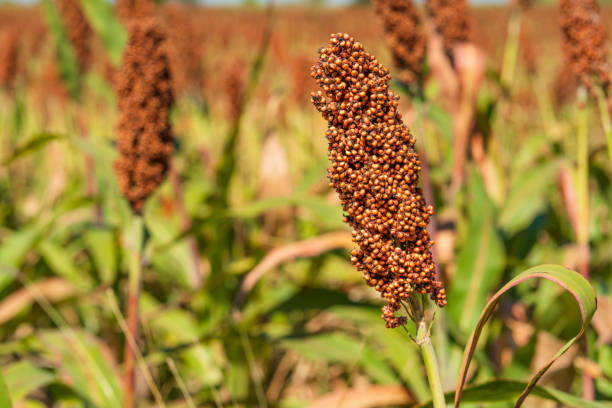

Jowar, also known as Sorghum (Sorghum bicolor), is a drought-resistant cereal crop widely grown in India. It is an important food grain in dry and semi-arid regions and provides high nutritional value.
Jowar grows well in warm climatic conditions and requires less rainfall. It is mainly cultivated during the Kharif season, where moderate rainfall supports healthy crop growth.
Jowar is rich in fiber, protein, and minerals. It requires less water compared to other cereal crops and supports sustainable farming, especially in drought-prone areas.
| Factor | Requirement |
|---|---|
| Best Season | Kharif |
| Soil Type | Loamy / Sandy soil |
| Temperature | 25°C – 35°C |
| Rainfall | 40 – 60 cm |
| Water Requirement | Low |
| Harvest Time | 100 – 120 days |